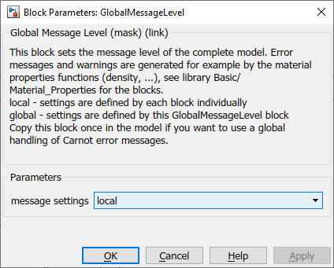
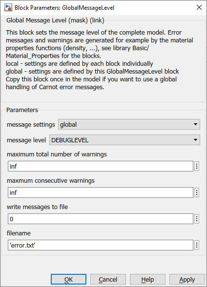

GlobalMessageLevel
Path: CARNOT/Toolbox
Purpose:
Handle the error messages of the fluid property blocks.
Description:
The block handles the warning messages in the background via the
CarnotCallbacks_GlobalMessageLevel
and the MessageLevelEnum. Messages and warnings
can be saved in a text-file. The message settings can be :
You can parameterize the warnings and error messages of the fluid property blocks:
Parameters and Dialog Box:


Examples:
Open the example explorer from the Matlab command window
ExampleBrowser
or load the examples via the CARNOT library.
Characteristics:
| Direct Feedthrough | : | No |
| Sample Time | : | none |
| Vectorized | : | No |